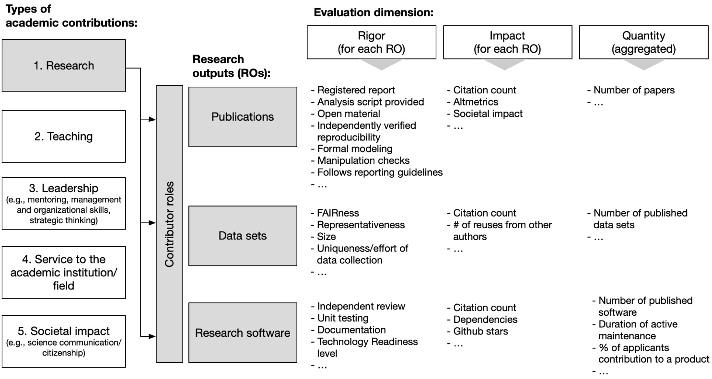

6 Researcher
- Open Data Survey:
- 75% of researchers say there is too little credit for sharing data (Goodey et al., 2022)
- main drivers: perceived higher citation (67%), increased perceived impact and visibility (61%)
- new metrics for evaluation evolving
- CoARA: “Value outputs associated with openness (FAIR data sets, […]” (CoARA, 2022, p. 21)
- signatories: DGPs, ERC, European Commission, DFG, Leibniz Association, …
- Example: DGPs recommendations on hiring and promotion (Gärtner et al., 2022; Schönbrodt et al., 2022)

- Data for reuse: Additional publication (e.g., data note in F1000 Research)
- With higher transparency, researchers have higher trust in authors (Schneider et al., 2022)
Questions to be answered at the end?
Please put them here!